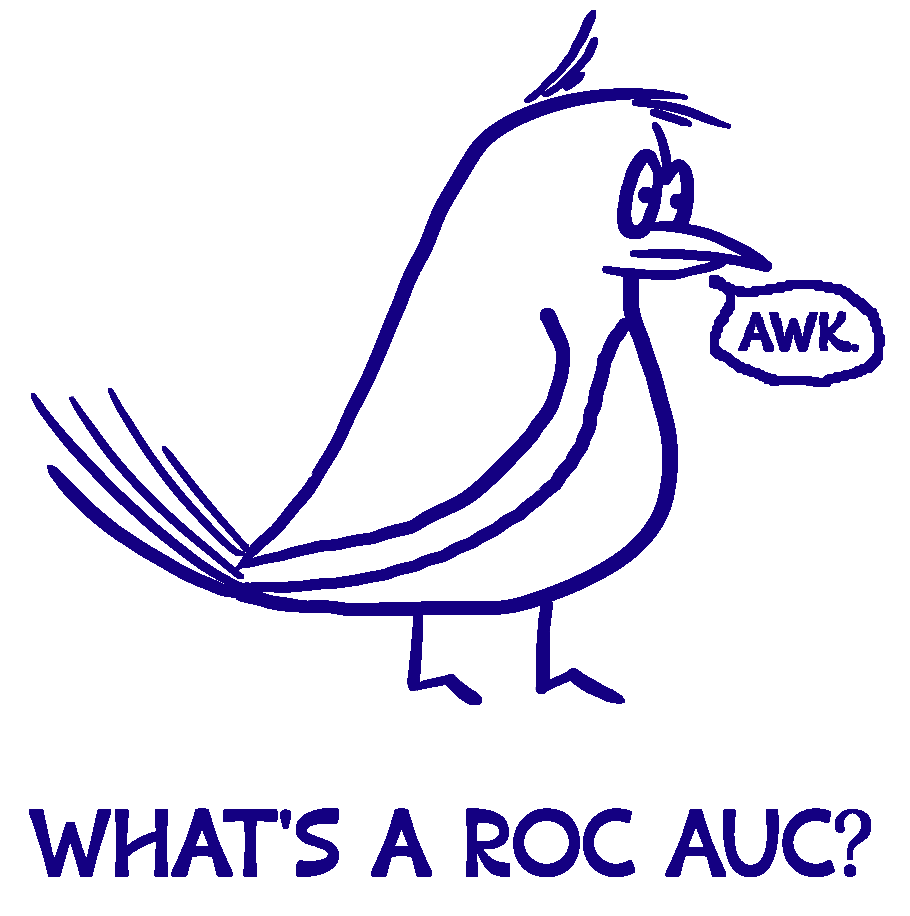

import pandas as pd
from sklearn.pipeline import Pipeline
from sklearn.neighbors import KNeighborsClassifier
from sklearn.tree import DecisionTreeClassifier
from sklearn.linear_model import LogisticRegression16 Introduction to Classification
16.1 Introduction
This document discusses classification, and the tools in pandas and sklearn that can assist with this. We will expand on our previous content by diving deeper into model evaluation.
Note
If you do not have the sklearn library installed then you will need to run
pip install sklearn
in the Jupyter/Colab terminal to install. Remember: you only need to install once per machine (or Colab session).
16.2 Machine Learning Mission
Recall that in machine learning our goal is to predict the value of some target variable using one or more predictor variables. Mathematically, we we’re in the following setup
\[ y = f(X) + \epsilon \]
where \(y\) is our target variable and \(X\) represents the collection (data frame) of our predictor variables. So far our discussion has assumed that \(y\) is a quantitative variable, but what if it’s a categorical variable?
The nature of our predictors could be exactly the same, but now we want to predict the value of a categorical variable.
16.3 Binary Classification with Logistic Regression
Suppose we want to predict whether a person is going to default on their loan based on the current balance. The variable we’re trying to predict is default and the values are “Yes” or “No”, and we have a quantitative predictor in balance.
In the past we’ve discussed dummifying categorical variables for use in modeling efforts and we could try that again here. That is, convert the values of the default variable to 1 (default on the loan) and 0 (not default on the loan). With the values of this variable now numeric, we might try using our previous modeling techniques…such as linear regression.
A straight-line (i.e. traditional regression) model is not appropriate for these data, as evidenced by the graph on the left. The fact that the target variable is numeric here (0 or 1) is artificial, and so it’s not appropriate to model it as though it were numeric.
16.3.1 Classification
Because our target variable is categorical, our machine learning task is known as classification. It also means that it no longer makes sense for our error metric to involve differences between the actual value and the predicted value. We should, instead, be looking at whether our predicted value matches the actual value. In such situations, the error term often used is mis-classification rate.
\[ \frac{1}{n} \sum_{i = 1}^n I(y_i \neq \hat{y}_i) \]
Note
It should be noted that the mis-classification rate will take value between 0 and 1 (i.e. 0 being when we get everything wrong, and 1 being where we get everything right). The complement (opposite) of the mis-classification rate is the overall accuracy, i.e. how well our method did.
It turns out that the classifier that minimizes this mis-classification rate on the test dataset is called the Bayes Classifier, which assigns each observation to the most likely class, given its predictor values.
In other words, classify a new observation to class \(j\) if
\[Pr(Y = j | X = x_0)\]
is the largest. As mathematical as this seems, it actually exactly matches how our intuition works!
Because it can be shown that the Bayes Classifier is the best, machine learning models for classification boil down to the task of estimating these probabilities well. To this end, our classification modeling techniques should give us access to predicted probabilities and not just the predicted categories themselves.
16.3.2 Logistic Regression
When our target variable is categorical and has only two distinct values (i.e. is binary) then logistic regression is a method often used. This approach involves modeling the log-odds of the target variable being in one category over the other, given the predictors. Mathematically, it’s something like
\[log(\frac{p(X)}{1 - p(X)}) = \beta_0 + \beta_1 X_1 + \cdots + \beta_p X_p + \epsilon\]
In our predictive modeling context it will suffice to know that after fitting the logistic regression model, predictions should take the form of probabilities of belonging to each possible category of our target variable.
Just like in multiple regression, we can want to penalize a logistic regression model in ways that limit the complexity of the model.
Thankfully, in Python, the LogisticRegression function allows for the specification of a penalty term if we wish!
16.4 General Classification
Unfortunately, logistic regression is especially built for binary classification problems. There are ways to employ it for classification problems in which the target variable has more than two distinct values, but they’re a little ad-hoc.
Instead we’ll turn to other methods when our target variable has more than 2 distinct values.
16.4.1 kNN for Classification
k-Nearest Neighbors is another approach for estimating the probabilities we need to do our classification. Once again, we will choose a value of \(K\) that determines the size of our neighborhood; i.e. the number of closest training data points we want to use. With a value for \(K\) chosen,
estimate the conditional probability for category \(j\) as the fraction of points in the neighborhood whose response value equal \(j\)
Simply put, for a new observation predict the category that is most frequent among the \(K\) closest training data points.
The kNN classifier can come surprisingly close to the optimal Bayes Classifier. However, the performance can be drastically affected by the choice of \(K\) somewhat similarly to the regression situation.
16.4.2 Decision Trees for Classification
The use of decision trees for classification is VERY similar to their use for regression (i.e. numerical target variable).
16.5 Validating Classification Models
So far we’ve been evaluating our models using mis-classification rate, or alternatively overall accuracy. As a small, motivating example for the rest of this section, consider the following situation.
Our target variable is binary and our dataset consists of the following: 95% class 1 and 5% class 2.
If we built a classifier that just called everything in our training dataset class 1 then our model would have a 95% training accuracy…which sounds really good!
However, we will have gotten everything that was class 2 wrong!
In many situations we hope that our mistakes (errors) are distributed across all categories of our target variable and are not exclusive to, say, one category as in the previous example. In some situations we do want to prioritize not making certain mistakes over making others. Because of this there are other metrics of interest beyond just overall accuracy when it comes to classification.
16.5.1 Confusion Matrices, Precision, and Recall
In classification problems, a confusion matrix is a convenient way to organize our results as a two-way table of our predicted categories versus the actual categories.
In general the orientation of this table is not important, but the confusion_matrix function in sklearn will organize our results with the actual categories along the rows of the table and the predicted categories along the columns of the table. In this way, we can see exactly what kind of mistakes are being made!
16.5.1.1 Precision
Precision is defined as the proportion of positive identifications that are actually correct. In other words,
\[ Precision = \frac{True Positives}{True Positives + False Positives} \]
16.5.1.2 Recall
Recall is defined as the proportion of actual positives that are identified correctly. In other words,
\[ Recall = \frac{True Positives}{True Positives + False Negatives} \]
Note
Note that both precision and **recall* have the same numerator; what differs is the denominator. The denominator is determined by whether we’re interested in dividing by the row total (from the confusion matrix) or the column total (of the confusion matrix), and again depends on what kinds of mistakes we want to prioritize not making…
No matter what kinds of mistakes we prioritize, higher values of both precision and recall are always better.
It should also be noted that both precision and recall were defined in terms of positives and negatives, which are only well defined in a binary classification situation. In a non-binary classification situation, we can still explore precision and **recall, but we would need to do so in a one-versus-all* way. For example, in the Palmer Penguins dataset, it might need to be
- Gentoo vs. Not Gentoo
- Adelie vs. Not Adelie
- Chinstrap vs. Not Chinstrap
16.5.2 ROC and AUC
So what the heck is a ROC-AUC anyway?!

16.5.2.1 Sensitivity and Specificity
Sensitivity is actually another name for recall, or the true positive rate.
Specificity is another name for the true negative rate:
\[ Specificity = \frac{True Negatives}{True Negatives + False Positives} \]
Similar to precision and recall, higher values of sensitivity and specificity are always better.
16.5.2.2 ROC
One extremely popular way to assess a classification model is via a Receiver Operating Curve, often called a ROC Curve.
Note that the false positive rate on the x-axis is also \(1 - Specificity\). It’s easiest to think about Fig 4. in terms of a binary classification problem.
16.5.2.3 AUC
We’ve established that better-looking classifiers are further above the diagonal line in the ROC plot, but many people have gone one step further in summarizing this visualization.
The area-under-the-curve (AUC) on the ROC plot gives a decent summary of the overall performance of the classifier.
16.5.3 F1 Score
Because classification model metrics can be so complicated, researchers have come up with a class of metrics that can summarize quantities like precision and recall into a single number. The \(F_1\) score is the “first” of these metrics:
\[ F_1 = 2\frac{precision \cdot recall}{precision + recall} \]
The \(F_1\) score is the harmonic mean of the precision and recall. It thus symmetrically represents both precision and recall in one metric. The highest possible value is 1.0, indicating perfect precision and recall, and the lowest possible value is 0, if either precision or recall are zero.
16.6 Conclusion
Even in classification problems we should be doing all of our evaluation on test data!